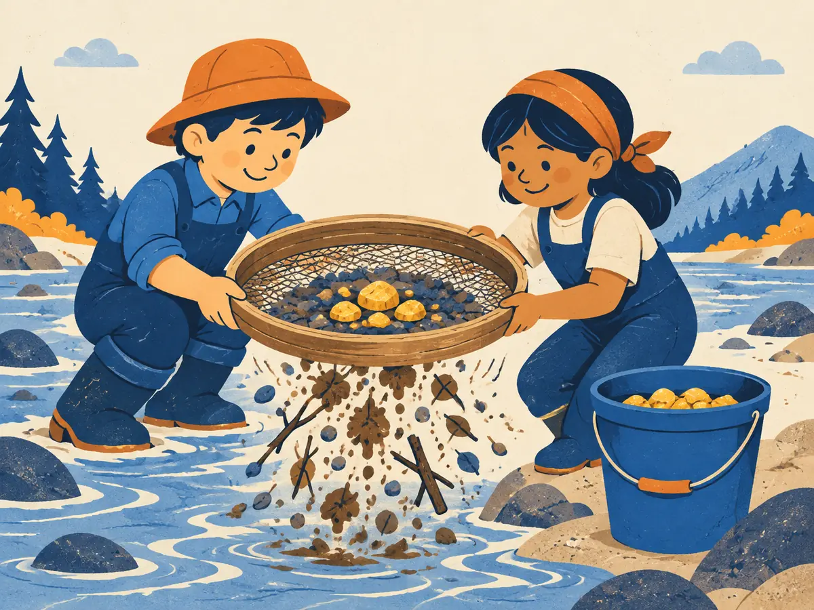

Pretraining data
An LLM only knows what was in its training text. Modern models read trillions of tokens, mostly scraped from the web, and most of the raw web is junk. This lesson follows the pipeline that turns a messy crawl into a training set, and shows why cleaner data often beats more data.
By the end you can
- Name the main sources of pretraining text and the scale of modern datasets.
- Walk through the cleaning pipeline: extraction, language ID, quality filtering, deduplication, PII/toxicity filtering and decontamination.
- Estimate how similar two documents are with shingles and Jaccard similarity, the idea behind MinHash.
Take your best guess. A wrong guess now makes the right answer stick.
A team crawls billions of web pages to build a pretraining set. How much of the raw crawl typically ends up in the final, cleaned dataset?
- Nearly all of it; the web is mostly fine
- About half
- A small minority; most pages are thrown away
- None of it; LLMs are trained on books only
Two small models get the same training budget of tokens. One reads a broad web dataset; the other reads only the pages a classifier rated as "educational". Which does better on knowledge and reasoning benchmarks?
- The broad web one, because more variety always wins
- The educational subset one
- They tie, because only the token count matters
- Neither can learn anything from web text
Where the text comes from
A pretraining corpus is a blend of a few kinds of source:
- Web crawl. The bulk of almost every corpus. Common Crawl, a nonprofit, has published free snapshots of the web since 2008 (in recent years roughly one a month); each snapshot holds a few billion pages.
- Code. Public repositories (for example The Stack v2, Lozhkov et al., 2024). Code also seems to help reasoning, not just coding.
- Books, papers and reference text. Long, carefully edited prose: arXiv and other scientific papers, Wikipedia, public-domain books.
- Math, multilingual and other targeted data, plus, increasingly, synthetic text written by other models (how much varies a lot between labs, and many don't say).
Everything is measured in tokens, the units the model reads (in English, very roughly 4 characters or ¾ of a word each). Some reference points:
- GPT-3 (Brown et al., 2020) trained on about 300 billion tokens.
- Llama 2 (2023): about 2 trillion. Llama 3 (Dubey et al., 2024): about 15 trillion. Recent open models report anywhere from roughly 15 to over 30 trillion.
- FineWeb (Penedo et al., 2024), an open dataset built from 96 Common Crawl snapshots, has about 15 trillion tokens. Its educational subset, FineWeb-Edu, has about 1.3 trillion.
- Other well-known open sets: The Pile (Gao et al., 2020, about 825 GiB of text), C4 (Raffel et al., 2020), Dolma (Soldaini et al., 2024, about 3 trillion tokens) and DCLM (Li et al., 2024).
Exact counts depend on the tokenizer and on how a lab counts repeated data, so treat these as orders of magnitude.
The cleaning pipeline
Raw HTML is not training text. Every serious dataset runs it through roughly the same sequence of stages. Watch a toy crawl of 60 pages go through them:
- Extraction. Pull the main text out of the HTML and drop menus, ads and footers. FineWeb found that running its own extractor (trafilatura) on raw HTML gave better models than using Common Crawl's pre-extracted text.
- Language ID. A small, fast classifier (often fastText) labels each page's language and how confident it is. FineWeb keeps English pages scoring at least 0.65.
- Quality filtering. First rules: the Gopher rules (Rae et al., 2021) drop pages with fewer than 50 or more than 100,000 words, an odd average word length, or too few words containing letters; C4 kept only lines ending in punctuation. Then a classifier: FineWeb-Edu had Llama-3-70B-Instruct rate about 450,000 pages for educational value from 0 to 5, trained a small model on those ratings, and kept pages scoring 3 or more.
- Deduplication. Remove exact copies (hash each document or line) and near-duplicates, the same page with a different date or footer, using MinHash (next section). Lee et al. (2022) found deduplicated training makes models emit memorized text about ten times less often.
- PII and toxicity. Mask personal data such as email addresses and IP numbers, block adult URLs and drop toxic pages. There's a trade-off: C4's word blocklist disproportionately removed African-American English and text about LGBTQ+ identities (Dodge et al., 2021), and heavy toxicity filtering can make models worse at recognizing toxic text (Longpre et al., 2023).
- Decontamination. Remove training text that overlaps with benchmark test sets, for example any 13-word sequence shared with a test question (the check GPT-3 used). Otherwise a model can "ace" a test it has memorized. Lesson M4.3 Contamination covers this in depth.
Explain like I'm 5

Imagine kids panning for gold in a river. They scoop up buckets of muddy gravel: that's the whole internet.
They shake it through a sieve. Mud and pebbles fall through: spam, broken pages, copies of the same thing. Only the shiny nuggets go into the clean bucket, and that bucket is what the model learns from.
Where it breaks: a real sieve keeps or drops each stone on its own. A data pipeline also has to spot copies of nuggets already in the bucket, and decide how much of each kind of gold to keep.
Finding near-duplicates: shingles, Jaccard and MinHash
To compare two documents, chop each into overlapping word n-grams called shingles, then measure how much the two sets overlap with the Jaccard similarity:
$$J(A,B) = \frac{|A \cap B|}{|A \cup B|}$$$A$ and $B$ are the two sets of shingles, $|A \cap B|$ counts the shingles they share, and $|A \cup B|$ counts the distinct shingles in either. $J = 1$ means identical sets, $J = 0$ means nothing in common.
Comparing every pair is hopeless: a billion documents make about $5 \times 10^{17}$ pairs. MinHash (Broder, 1997) gets around it: apply a hash function to every shingle and keep only the smallest value. For two documents, the chance that their minimums match is exactly $J(A,B)$. So each document is boiled down to a short signature of, say, 128 minimums, and the fraction of matching entries estimates $J$. A trick called locality-sensitive hashing then buckets signatures so only likely duplicates are ever compared.
Worked example
Use 2-word shingles. A = "the cat sat on the mat", B = "the cat sat on a mat".
- Shingles of A: {the cat, cat sat, sat on, on the, the mat}: 5 shingles.
- Shingles of B: {the cat, cat sat, sat on, on a, a mat}: 5 shingles.
- Shared: {the cat, cat sat, sat on} = 3. Union: $5 + 5 - 3 = 7$.
- $J = 3/7 \approx 0.43$. With 128 MinHash functions, expect about $0.43 \times 128 \approx 55$ matching signature entries.
A = "we train language models on web text" and B = "we train language models on clean web text". Use 2-word shingles again: A has 6 shingles and B has 7.
- Number of shingles they share:
- Size of the union $|A \cup B|$:
- Jaccard similarity $J$:
- Expected matching entries in a 128-hash MinHash signature:
Mixtures: how much of each source
After cleaning, you decide the data mixture: what fraction of training tokens comes from each source. Small, high-quality sources are often upsampled, meaning seen more than once. GPT-3 drew 60% of its training tokens from filtered Common Crawl but saw it only about 0.44 times, while Wikipedia, just 3% of the tokens, was seen about 3.4 times (Brown et al., 2020). Llama 3 reports a final mix of roughly half general knowledge, a quarter math and reasoning, 17% code and 8% multilingual text, and finishes training with an "annealing" phase on upsampled high-quality data.
Repeating data is fine in moderation: Muennighoff et al. (2023) found that up to about 4 epochs of repeated data is almost as good as fresh data, with returns fading quickly after that.
Why quality beats raw quantity
Every training token costs the same compute, whether it's a textbook paragraph or a spam page. Spending that budget on better tokens pays off:
- FineWeb-Edu (about 1.3T tokens) beat the full 15T-token FineWeb on knowledge and reasoning benchmarks at the same training budget.
- Microsoft's phi-1 (Gunasekar et al., 2023, "Textbooks Are All You Need") reached strong coding scores at 1.3B parameters by training mostly on "textbook-quality" and synthetic data.
- DCLM (Li et al., 2024) found the choice of quality classifier was among the most important decisions in its whole pipeline.
And quantity is running out: Villalobos et al. (2024) estimate the stock of public human-written text at a few hundred trillion tokens, which frontier training could use up within years. That's one reason labs care so much about filtering and synthetic data.
Why do pretraining pipelines deduplicate, and how does MinHash make it possible at web scale?
What is the main purpose of decontamination?
- Removing toxic pages from the corpus
- Removing pages in the wrong language
- Removing personal data such as emails
- Removing text that overlaps with benchmark test sets, so evaluation scores stay honest
Two documents have Jaccard similarity 0.9 over their shingles. Out of 200 MinHash values, about how many will match?
- About 20
- About 180
- All 200, always
- About 100, since it's random
A boilerplate paragraph appears 50,000 times in a crawl and nobody deduplicates it. Linking back to overfitting (P2.4), what's the most likely effect?
- The model memorizes it and can reproduce it word for word, wasting compute that could have taught something new
- Nothing, because repetition has no effect on gradient descent
- The model learns to ignore that paragraph entirely
- Training crashes
In GPT-3's mix, Wikipedia was only 3% of training tokens but was seen about 3.4 times, while Common Crawl was seen less than once. Why?
- Wikipedia was accidentally duplicated
- Common Crawl ran out of pages
- High-quality sources were deliberately upsampled, even though they're small
- Wikipedia text has fewer tokens per page
Key takeaways
- Pretraining corpora are measured in trillions of tokens, mostly web crawl plus code, papers, books and math.
- The pipeline: extract → language ID → quality filter → deduplicate → PII/toxicity → decontaminate → mix. Most raw pages are dropped.
- MinHash estimates Jaccard similarity from short signatures, making near-duplicate detection feasible at web scale.
- Every token costs the same compute, so quality per token (classifier filtering, upsampling good sources) often beats more raw data.
Add this lesson's cards to your spaced-review deck.